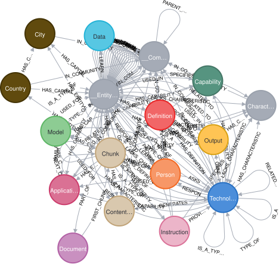
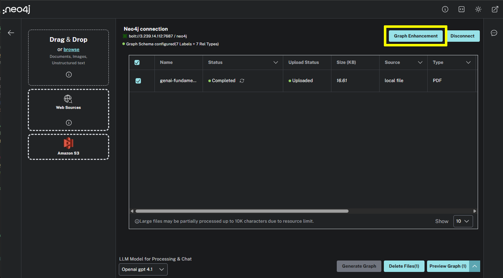
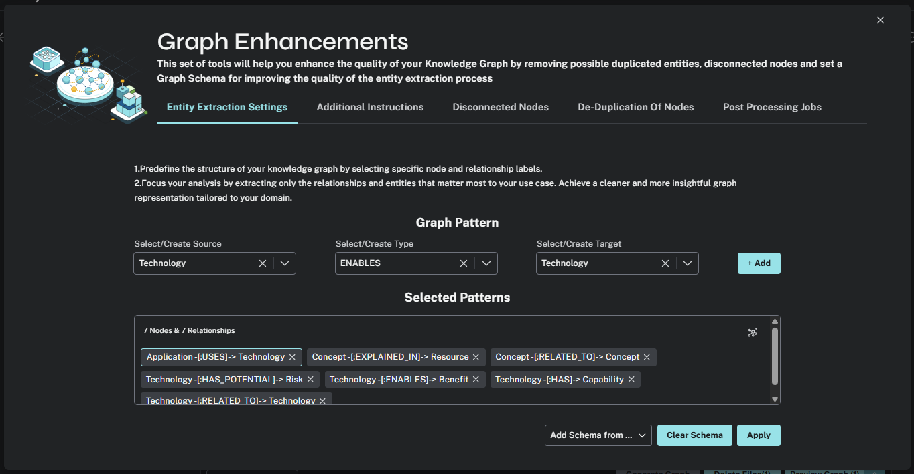

CALL db.schema.visualization()Customize the schema
Currently, the LLM will extract any nodes and relationships in the text. The graph can become complex even with a single, relatively simple document.
You can view the current schema using the db.schema.visualization() function.

This unrestricted schema can help understand granular details in the text. However, you can focus on specific entities and relationships by defining a schema.
Define a schema
The schema is a set of graph patterns of node labels and relationship types ((node)-[RELATIONSHIP]→(node)), you want to identify within the text.
To define a schema, click the Graph Enhancement button.

You can load a pre-defined schema or supply a list graph patterns in the Entity Extraction Settings.

Try modifying the schema to include the following graph patterns:
-
(Technology)-[:RELATED_TO]→(Technology)
-
(Technology)-[:HAS]→(Capability)
-
(Technology)-[:ENABLES]→(Benefit)
-
(Technology)-[:HAS_POTENTIAL]→(Risk)
-
(Concept)-[:RELATED_TO]→(Concept)
-
(Concept)-[:EXPLAINED_IN]→(Resource)
-
(Application)-[:USES]→(Technology)
|
Important
|
Delete existing document
You must delete the existing document, re-upload the PDF, and regenerate the graph to apply the new schema.
|
Experiment with different schema configurations to see how the graph changes.
Customization
Through the Graph Enhancement feature, you can also customize:
-
The prompt used to extract entities and relationships.
-
The chunking strategy used to split the document into smaller pieces.
-
Deleting disconnected nodes from the graph.
-
De-duplicating nodes.
-
Fine tuning any post processing of the graph.
When ready, continue to the next lesson where you will upload documents for the complete courses and build the knowledge graph.
read::Continue[]
Summary
In this lesson, you customized the schema for the knowledge graph.
In the next lesson, you will upload the complete course documents and build the knowledge graph.